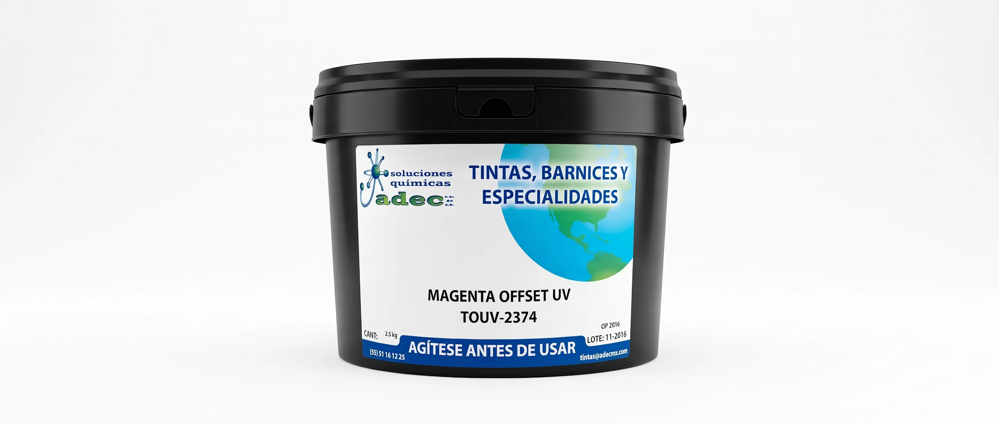

TOUV-2374

TINTA OFFSET UV
Magenta Offset UV
Formulación de alta concentración pigmentaria y viscosidad estable, ideal para cuatricromías de alta fidelidad y velocidad en prensa.
SOLICITAR COTIZACIÓN →